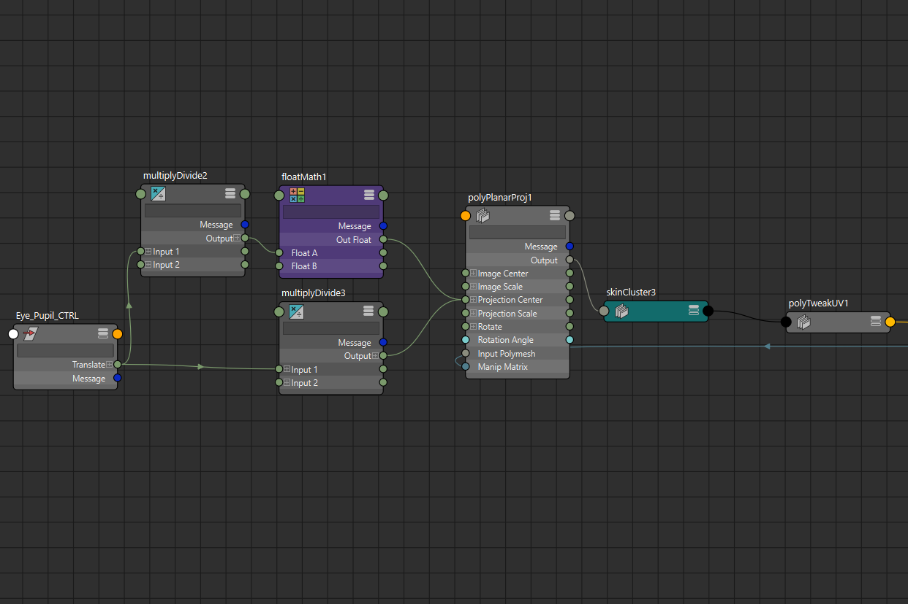
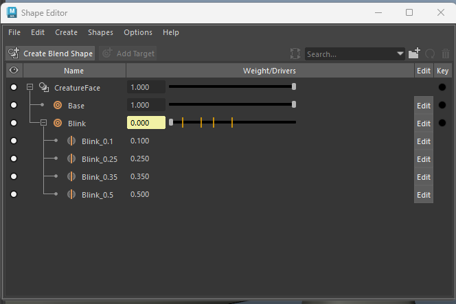
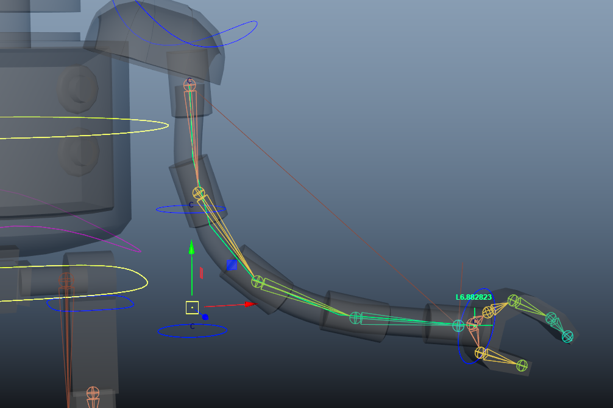
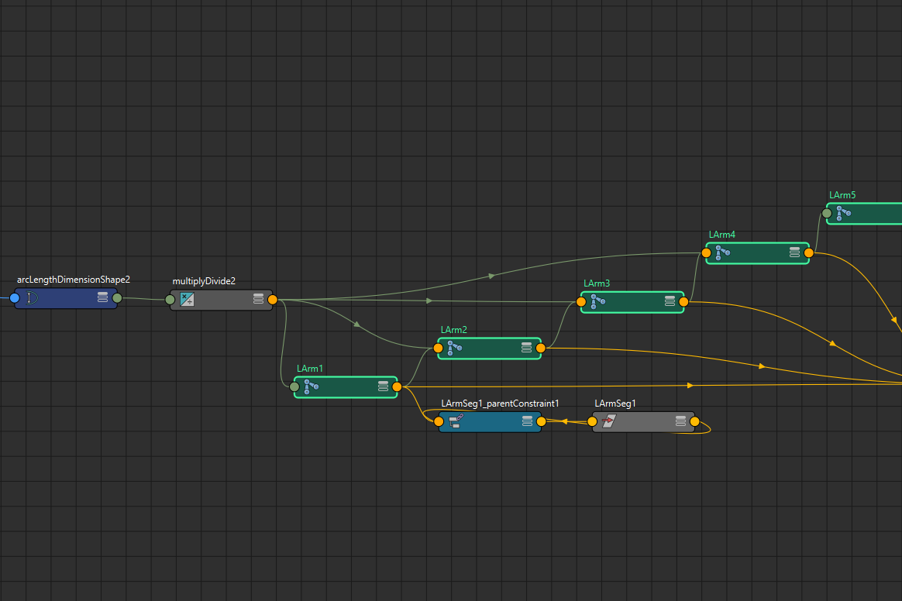
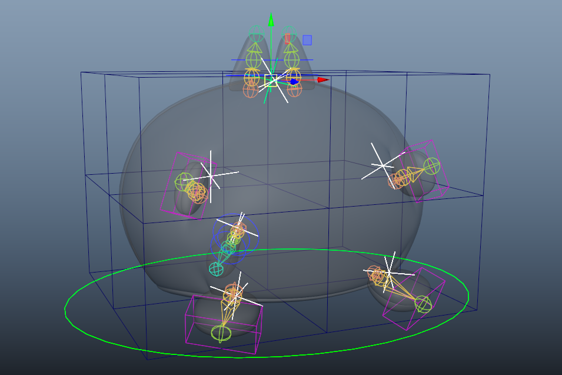
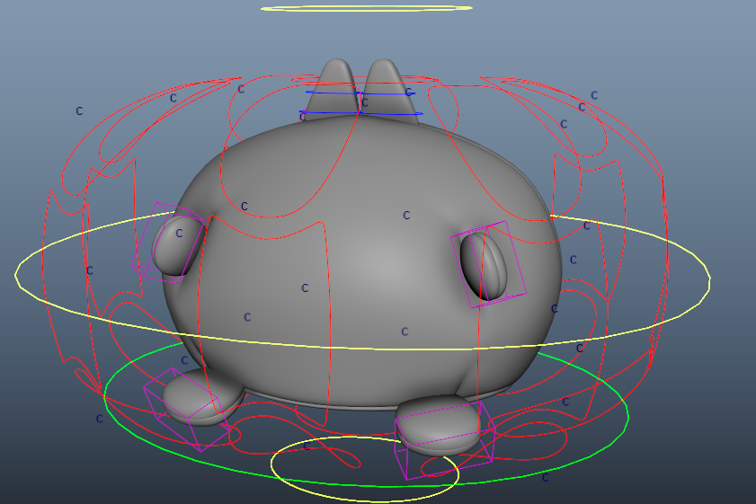
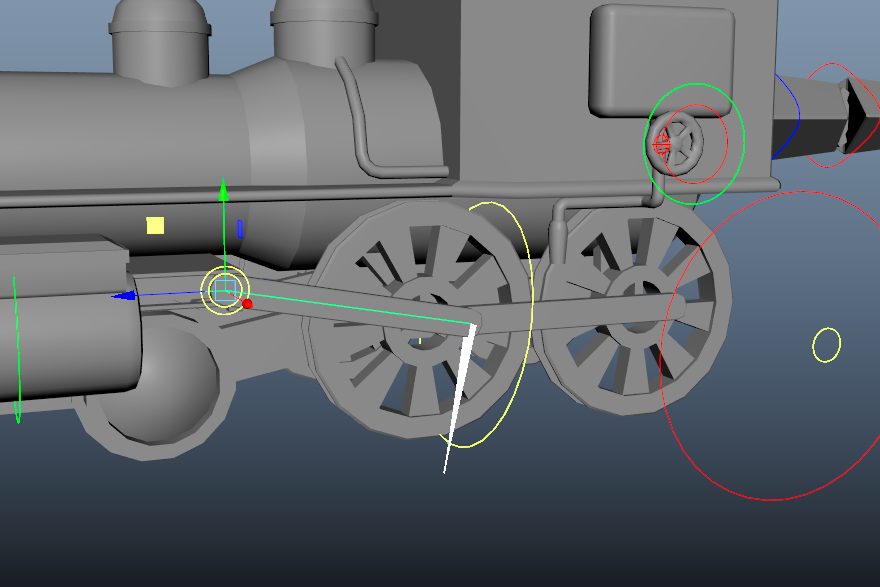
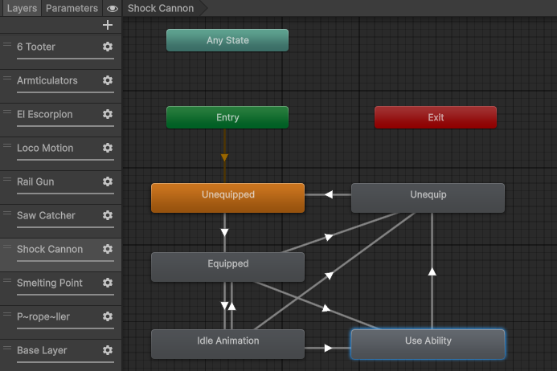
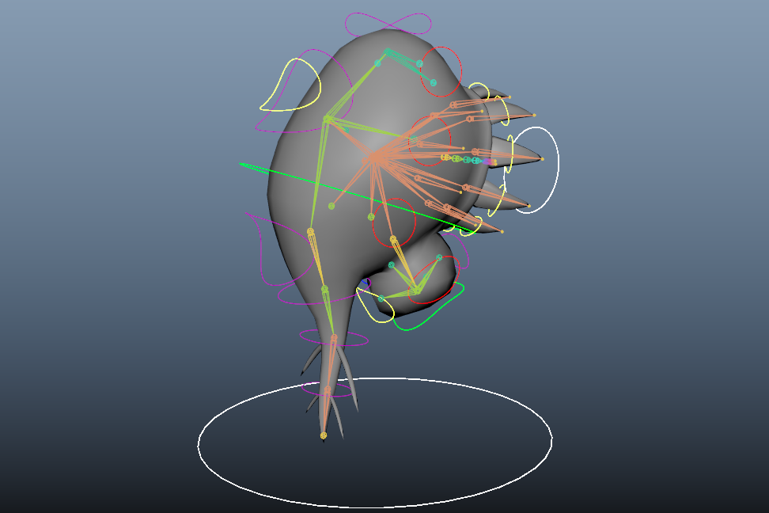
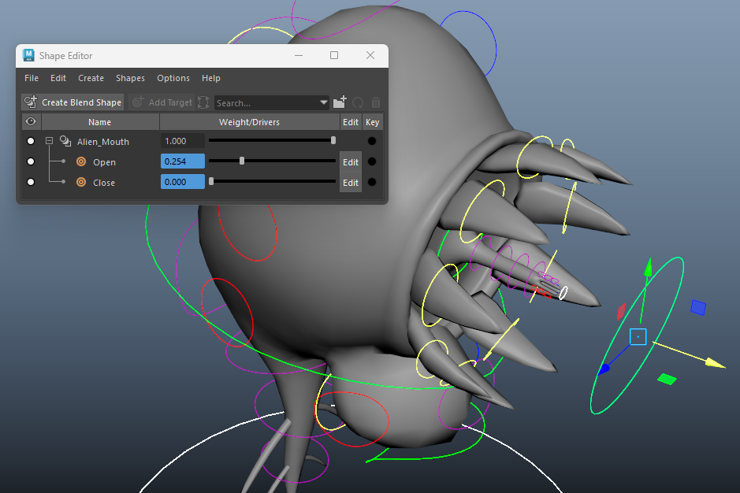
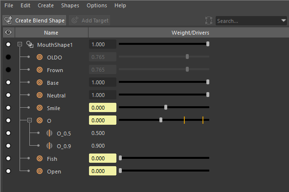
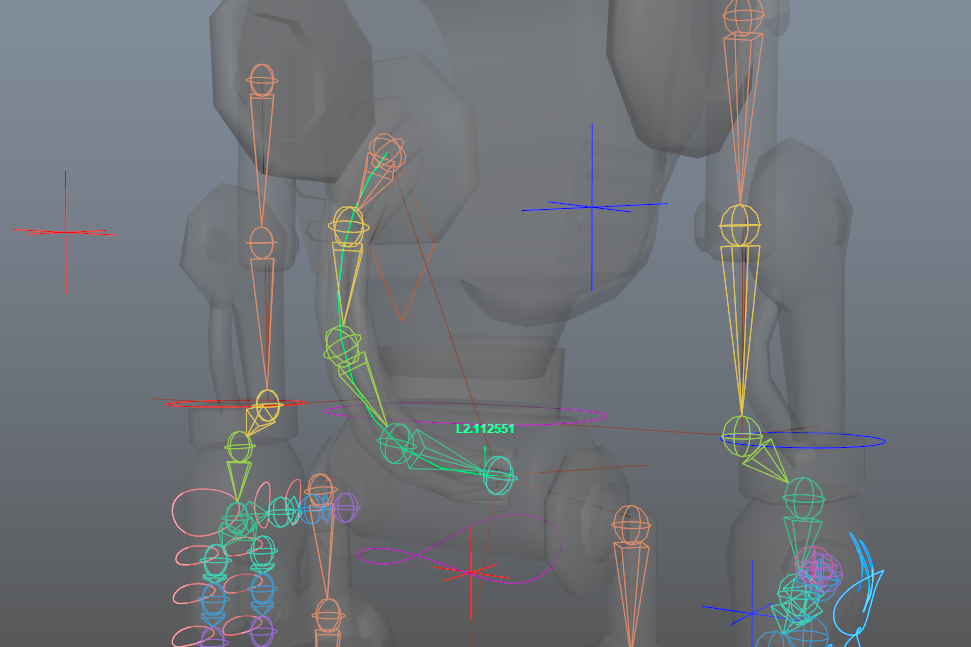
After seeing them in a vision on the train home, I rushed to model and rig The Guy in just a few hours at night. The face introduced a number of challenging features, such as the teeth and eyeball occupying the same space, and the aforementioned eyeball being non-spherical. As a fan of physical driver controls, I linked all the face controls into a very visual set up, tying in visibility and a blinking blendshape, as well as linking the eyeball’s UV coordinates proportionally to its controller.
One of the first full rigs I created, CHEF’s physics defying arms allowed me the space to experiment with a variety of techniques to bring them to life. I kept a scene on the side with all my different tests and eventually settled on using a spline IK on a chain of bones, each of which were scaled proportional to an arc length node that was keeping track of the spline’s length. This gave CHEF’s arms the stretch they required, as well as the flexibility, which was achieved with cluster controls on the points of the spline. I also had some fun with jiggling vertexes for CHEF’s moustache and hat, the latter of which’s bone is taking only 50% influence from its controller to mimic an elastic feel.
Part of a larger project I set myself in which I modelled and rigged objects I owned, Calvin introduced the difficult challenge of malleability. His final rig consists of a mix of bones in both FK (ears/tail) and IK (hands/feet), as well as a lattice deformer, all held together with UV pin constraints. While not completely comprehensive to every shape the real world plush can take, I’m very happy with how well this rig mimics the squishability of Calvin.
Designed for a turn based rpg called Trainsformer: The Western Track, this marvel of engineering was a long process of ideating, modelling and rigging, which I believe was well worth it for the final result. The majority of the rig uses fairly simple techniques, so the depth of skill was required in ensuring that the vast number of seperate parts all worked together as one. The ability I'm most proud of is the wheel coupling rod, which uses an IK controller that is attached at one end to the wheel and at its other to the piston, the latter of which has its vertical movement constrained.
The creature from a small space horror game I worked on, I wanted H.E.N.R.I. to stray from traditional monster designs that fell heavily into a zombie-esque vibe. Rather than a mindless, primal beast, I designed H.E.N.R.I. as a hyper intelligent, psychic creature that was toying with the player to feed on their fear. The rig itself was quite simple, with a lot of controllers that let H.E.N.R.I.’s flesh and brain pulsate and wiggle grossly. My main take away from this project was efficiency, with the whole rig being put together in just 2 hours, which allowed me to focus on animation and environment design.
Another robot character, though this time much more rigid than CHEF, Billy was primarily an opportunity to have fun with ways I could set up physical driver controls. I learned a lot of new techniques for making controllers from scratch and a new way to arrange finger controls for easier access. Being unable to speak besides making bubble sounds made the movement of his mouth a fun aspect to approach and I’m quite happy with how the lips control.